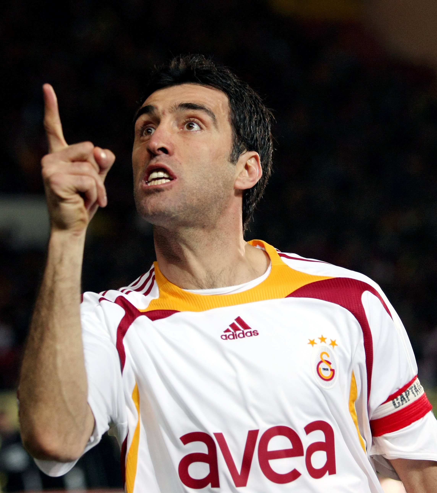
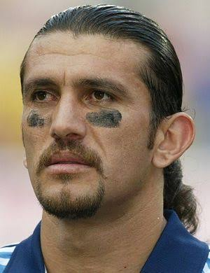
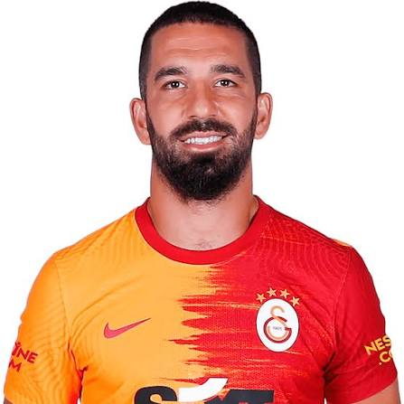
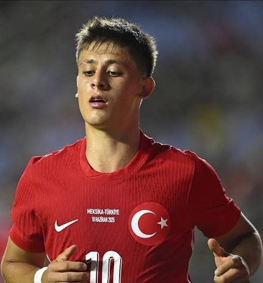

TURQUÍA
Guiados por una camada de jóvenes cracks electrizantes, el conjunto otomano regresa al magno evento con el objetivo de encender la pasión de su afición y repetir epopeyas pasadas.





Sorprendieron al planeta entero en la Copa del Mundo de Corea-Japón 2002 tras desplegar un fútbol excelso y quedarse con la medalla de bronce (3er puesto).
Han consolidado un estatus de equipo de temer en la UEFA gracias a épicas campañas en las Eurocopas de 2008 y la reciente edición de 2024.
Caracterizados por albergar una de las fanaticadas más ruidosas, pasionales y entregadas del mundo, factor que empuja al equipo a dar campanadas.
UEFA (Europa)
Bizim Çocuklar (Nuestros Muchachos) / Los Otomanos
Reclamar su lugar en la élite. Tras años de ausencia mundialista, buscan consolidar su nueva "Generación de Oro" liderada por jóvenes cracks en las rondas finales.